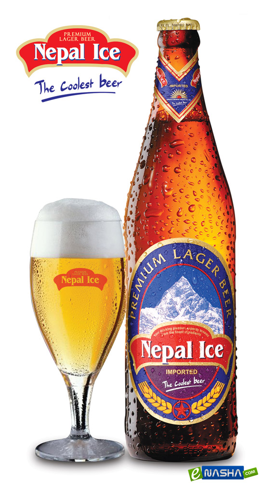

Пиво - алкогольний напій, отриманий шляхом бродіння. Третій напій у світі за популярністю після води та чаю.
Пиво характеризується специфічною гіркотою та ароматом, що надає йому хміль, а також здатністю до піноутворення. Процес виробництва пива називається броварством або пивоварінням.
В залежності від типу бродіння пиво поділяється на два види ель та лагер.Ель - вид пива, що виробляється верховим бродінням, має тонкий фруктовий присмак та високий (у порівнянні з Лагером) вміст спирту. Цей спосіб виготовлення напоїв відкритий ще за часів древніх шумерів. До того, як в Англію привезли
хміль з Нідерландів, термін “Ель” використовувався виключно для напоїв, отриманих в результаті бродіння без хмелю. Для напою з додаванням хмелю почали використовувати термін “Пиво”.
Для виготовлення елю використовуються дріжджі (Saccharomyces cerevisiae), які після ферментації виштовхуються на поверхню вуглекислим газом. Верхове бродіння відбувається при температурі від 15 до 24 С, при цьому утворюється багато вищих спиртів
та ефірів, що відбивається на смаку та ароматі пива.
Стандартна технологія виготовлення пивного елю – зварене сусло охолоджують, додають дріжджі та дають побродити в ємностях 3-5 діб при температурі 15-24 С. Верхове пиво зазвичай сильно охміляють, а в міцні сорти деколи додатково вносять хміль
в процесі доброджування. Дозріває верхове пиво у підвалах при температурі 11-14°C. При такій же температурі це пиво і подають, щоб якнайкраще розкрився його присмак. В цьому виді пива частіше за все використовується ячмінний солод, а хміль надає гіркоти
та виступає в ролі консерванту. Весь процес займає в середньому 3-4 тижні.
Довге верхове бродіння, відсутність пастеризації та стерилізації забезпечують оригінальний смак. Доречі, солодкість солоду в процесі приготування визначає не присутність хмелю, а спеції та трави, які варяться в суслі. Коли напій готовий, його
відправляють по бочках та пляшках. Можуть додавати в кожну ємність трохи цукру. Цукор відновлює процес бродіння та протягом 3-4 тижнів ель дозріває. Виготовлений за класичною технологією, він містить вітаміни груп В, Е, селен, фосфор, кальцій, калій
та магній. Але не варто забувати про високу калорійність елю – в середньому 40 ккал на 100грамів продукту.
| Вид | Опис | Фото |
|---|---|---|
| Портер | Темне міцне щільне пиво з сильним солодкувато-гірким смаком і хмелевим присмаком. Містить велику кількість ароматичних речовин. Колір варіюється від світлого до дуже темного. | |
| Стаут | Темний нащадок портеру з сильним хмелевим смаком. Декілька видів паленого солоду надають насичений колір та легкі кавові нотки. | |
| Коричневий ель | Насичене, сухе темно-коричневе пиво зі смаком солоду та горіхово-шоколадним, винним або карамельним присмаком. | |
| Пейл | Світле пиво бронзового відтінку, яке містить невелику кількість вуглекислоти. Найчастіше дозріває у пляшках. Має гіркувато-пряний присмак. | Біттер | Для виготовленя використовують найсвітліший очищений ячмінь та багато хмелю, що надає освіжаючого смаку з нотками фруктів. |
| Пшеничний ель | Містить 50-67% пшеничного солоду. Зазвичай, це світло-солом’яне пиво з помірним фруктово-квітковим ароматом за хлібним запахом. | |
| Білий ель | Легке пшеничне пиво з невеликим вмістом алкоголю, фруктовим акцентом та кислуватим присмаком. Як правило, до нього додають цукровий або малиновий сироп. | |
| М'який ель | Найлегший ель (світлий або темний) з вираженим солодовим смаком. Його міцність наближена до квасу 2.5-3.5% | |
| Ячмінне вино | Незвичайне пиво з великим вмістом алкоголю 8-12% та високою щільністю. Має солодову гіркоту з фруктовим ароматом. Після витримки стає м’якіше. | |
| Ламбік | Рідкий бельгійський ель, бродіння якого відбувається на відкритому повітрі. Для покращення смаку ароматизується фруктами. |
Лагер - вид пива, яке дозріває при зберіганні — найпоширеніший вид сучасного світлого, легкого та сухого пива у чесько-німецькому стилі, який був придуманий у Богемії у 1842 році. На лагер припадає 80-90% світового виробництва
пива і лише залишок на інші типи, переважно ель. В старовину ж навпаки переважав ель, а лагер виник як екзотичний вид монастирського весняного пива.
Для виготовлення лагера використовують дріжджі низового бродіння (Saccaromyces carlsbergensis), які після ферментації опускаються на дно посудини. Низове бродіння відбувається при температурі від 4 до 9 °C. Через низьку температуру утворюється
менше грибків і мікробів чим при верховому бродінні, тому такі сорти пива довше зберігаються.
Типова технологія виготовлення лагеру – зварене сусло охолоджують, добавляють дріжджі й дають побродити в спеціальних ємностях близько тижня за певної температури. Після цього дріжджі відділяють, а пиво проходить друге бродіння вже за помітно
нижчої температури, яку в старовину досягали заносячи в льохи брили криги (тому довгий час лагер був сезонним напоєм). Оскільки за низьких температур біологічні процеси вповільнюються, то це «холодне» доброджування досить тривале — від 20 днів до
кількох місяців.
Далі пиво фільтрують та розливають в ємності (бочки, пляшки, банки). Пляшкове пиво часто пастеризують, або використовують тонку фільтрацію. Також існує і нефільтрований лагер.
Всупереч поширеним думкам, лагер може бути як світлим, так і темним, і навіть чорним. Колір пива визначається лише ступінню обсмаження солоду та кількістю темного солоду, який використовується при варінні. Також не обов’язково лагер має бути
виготовлений тільки з хмелю та солоду. Трапляється, що солод замінюють яким-небудь іншим зерном (пшеницею, житом або навіть рисом).
| Вид | Опис | Фото |
|---|---|---|
| Світлий лагер | Класичний лагер. Смак у такого пива свіжий, без вираженої солодкавості або гіркуватості з добре відчутними хмелевими нотами. | |
| Пілснер | Прозоре, золотисте за кольором та добре освіжаюче пиво. Має харатерний пивний аромат та м’який смак хмелю. | |
| Янтарний лагер | Має насичений бурштиновий колір, добре збалансований м’який солодовий смак, з нотками підсмажених зернових, та помірну міцність. | |
| Льодове пиво | Легке пиво, яке після варіння, але до фінального бродіння, швидко охолоджують. Отримують пиво майже з подвійним вмістом алкоголю. |  | Темний лагер | Більш солодка версія лагеру з темно-янтарним або темно-коричневим кольором. Має хлібний аромат з нотками карамелі або шоколаду |
| Драфт | Пиво з бочки, яке не пастеризується. Транспортують пиво в холодильних контейнерах, або піддають тонкій фільтрації, що замінює пастеризацію. | |
| Бок | Більш міцне пиво тривалого відстоювання. Традиційно виготовляється в Німеччині наприкінці збирання врожаю. Бок буває світлим та темним. | |
| Копчений лагер | Пиво з копченим присмаком, який надає напою солод, підсмажений на вогні від спалення букової деревини. |